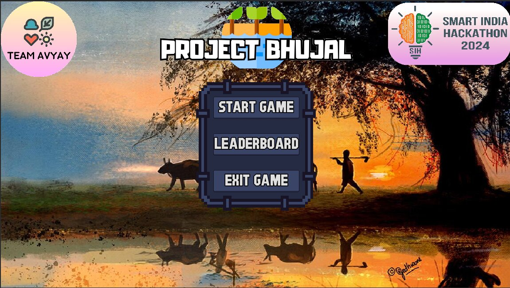
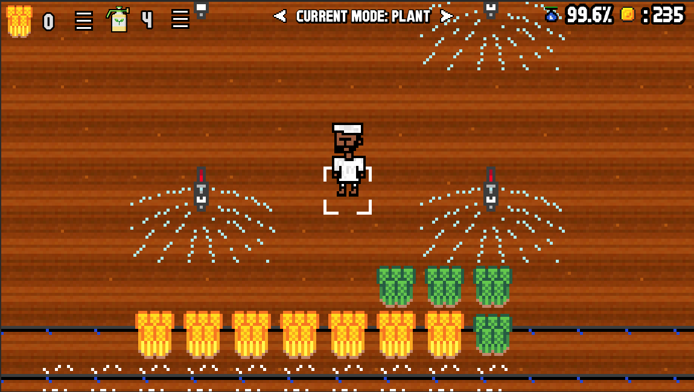

Project Bhujal

A 2D farming game about running a farm without draining the aquifer under it. You plant crops, you water them, and every structure you use moves one shared groundwater number up or down. Built in Godot 4 and GDScript.
This was our entry for the Smart India Hackathon 2024. We built it in about four weeks in September 2024 as Team AVYAY, five people, and it won the intra-campus round at VIT-AP.
Team repository on GitHub (my fork is SIH-2024-divy). My commits there are under my old handle, TheHelltaker.
What I built
I wrote the groundwater simulation and the three structures that act on it.
There is one shared aquifer value in globals.gd, clamped between 0
and 100, which emits a signal whenever it changes so the UI and the land tiles
can react. Everything else is built around pushing that number in one direction
or the other.
- Tubewell. The cheap and obvious way to water a field. While it runs it takes 0.5 off the aquifer every second, and it never stops on its own. You have to walk over and switch it off.
- Sprinkler. Does the same job for 0.1 per second, one fifth of the draw. This is the whole lesson of the game in two numbers. Nothing tells the player about it. They work it out by watching the water meter fall slower.
- Recovery well. Rainwater harvesting with a buffer. While it is raining it fills its own 50 unit tank at 1 per second. Once the aquifer drops below full it starts giving that water back, and each unit it releases returns half a unit underground. So a well that sat through a storm can carry a farm through the dry stretch after it, but not for free.

The reading at the top right is the aquifer. It is the same number every structure on the map is pulling at or pushing back into, and watching it fall is the only feedback the game gives you. Three sprinklers are running here over wheat and a second crop, with drip pipes laid along the rows.
I also did the land and in-game UI overhaul, the rain and weather scenes, and the main menu. Past the code, I was the one merging the team's branches, so most of the integration went through me. 30 of the 51 commits on the repository are mine.
What I left for the next round
This is a prototype. We had about four weeks and one thing to prove, that a farming game can make groundwater depletion something you feel instead of something you are told. Everything past that got cut on purpose, and it would have come back if we had gone through to the next round.
- Balancing. Every rate in the game is a placeholder I set by feel. 0.5 for the tubewell, 0.1 for the sprinkler, half back from the recovery well. They are tuned so the meter moves fast enough to read in a five minute demo, not to model a real aquifer. The next pass ties them to actual draw and recharge figures, then playtests for a difficulty curve that does not collapse the moment somebody builds two recovery wells.
- Telling the player what they are looking at. Right now the sprinkler costing one fifth of the tubewell is the whole lesson, and the only way to find it is to notice the meter falling slower. That works for judges who are watching for it. It does not work for a school kid, which is who the thing is aimed at. This needs a comparison the player can see, not a difference they have to infer.
- The aquifer as a global. One value in
Globalswith a setter that clamps and emits was the right shape for four weeks. It is also the first thing that would have to change, because every structure reaches into it directly and there is no way to test one on its own. Adding a fourth and fifth structure is where that starts to hurt.
Team
- Aniketh Reddy
- Srinith
- Darin Joseph
- Ojaswi Gupta
- Divyansh Shukla
The addons/ directory is third party. The git plugin and the
Quiver leaderboard and player account addons came from upstream and none of that
is our code.